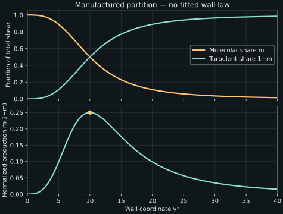

9. Inner scaling and friction velocity
The outer boundary-layer estimate made molecular momentum transport small. The wall requires it to matter. Resolving that apparent conflict introduces a viscous length, a velocity built from wall shear, and a region where molecular and fluctuating momentum fluxes exchange their shares of an almost constant total stress. The usefulness of this region depends on how small the omitted momentum terms actually are.
Lessons 24–27 motivate an inner layer, derive its order estimates, integrate a leading stress balance, define friction velocity and wall coordinates, and describe linear, buffer and overlap regions. We follow that sequence while keeping the finite-Reynolds-number remainder. The instructor's Couette graphs are discussed through the full captions; numerical examples here are separately stipulated and are not digitized DNS.
9.1 One outer thickness cannot resolve every wall distance L24 · 00:17
Let \(x\) be streamwise and \(y\) normal to a stationary smooth wall. Use mean velocities \(U,V\), mean pressure \(P\), and positive covariance \(R_{ij}=\mathbb E[u_i'u_j']\), with \(u_i'=u_i-\mathbb E[u_i]\). Assume stationary incompressible constant-property statistics, homogeneity in the spanwise direction, and the conventional planar mean state. The exact streamwise mean equation is
Subscripts on \(U,V,P\) denote derivatives in this chapter; subscripts on \(R_{ij}\) remain tensor components. Density \(\rho>0\) and kinematic viscosity \(\nu>0\) are constant. Chapter 8 showed that an outer scale \(\delta\ll L\) can make \(\nu U_{yy}\) small relative to the chosen outer acceleration, provided the combination \(\mathrm{Re}_L(\delta/L)^2\) is large. That regional estimate cannot make viscosity irrelevant at the wall, where no slip requires a full velocity transition.
Introduce an inner wall-normal length \(\ell\ll\delta\), an inner velocity \(u_w>0\), and the same streamwise development length \(L\). The lecture writes the length as \(\eta_w\); we use \(\ell\) until its relation to wall shear is fixed. The label “inner” describes its position relative to the outer thickness, not a separate fluid or a sharp material surface.
The source compares mean and rms velocities in an inner region to motivate a common characteristic velocity scale. This can be useful for a finite near-wall region, but it is not a statement that every component is equal, or that all component rms values vanish with the same power as \(y\to0\). The exact smooth-wall expansion below gives a stronger and more anisotropic constraint at the wall itself.
We also retain pressure as a separate possible participant. The fact that a flow is turbulent does not require the pressure gradient to be smaller than the Reynolds-stress divergence. Pressure, inertia, molecular stress and turbulent transport can form different balances in different regions. The following common inner balance assumes a sufficiently small pressure contribution at the selected scale; a strong imposed gradient or separation can invalidate it.
9.2 Keep the inner Reynolds number until the balance selects it L25 · 00:14
Take \(U\) and its increments to have scale \(u_w\), with changes over \(L\) in \(x\) and \(\ell\) in \(y\). Mean continuity gives \(V_s\sim u_w\ell/L\), where \(V_s\) is a characteristic normal mean speed. Then both advections have the same scale:
The wall-normal molecular term has scale \(\nu u_w/\ell^2\). Use it to normalize the equation, define \(a=\ell/L\ll1\), and temporarily retain the unknown inner Reynolds number \(\mathrm{Re}_{\ell}=u_w\ell/\nu\). With covariance scale \(u_w^2\) and non-small shear correlation in the selected region, the ratios are:
| Term | Scale divided by \(\nu u_w/\ell^2\) |
|---|---|
| \(U U_x,\ V U_y\) | \(\mathrm{Re}_{\ell}a\), each |
| \(\partial_xR_{11}\) | \(\mathrm{Re}_{\ell}a\) |
| \(\partial_yR_{12}\) | \(\mathrm{Re}_{\ell}\) |
| \(\nu U_{xx}\) | \(a^2\) |
| \(\nu U_{yy}\) | \(1\) |
| \(P_x/\rho\) | \(\left|P_x\right|\ell^2/(\rho\nu u_w)\) |
Small \(a\) alone does not make \(\mathrm{Re}_{\ell}a\) small if \(\mathrm{Re}_{\ell}\) were allowed to grow like \(a^{-1}\) or faster. Selecting a region where molecular and turbulent stress gradients are comparable gives \(\mathrm{Re}_{\ell}=O(1)\). With that selection, the inertial and streamwise covariance terms are smaller by \(a\), streamwise molecular transport by \(a^2\), and pressure must satisfy its own smallness condition. The leading equation becomes
The order-one relation is not an exact numerical theorem asserting that a particular measured layer has Reynolds number exactly one. We may define a reference length \(\nu/u_w\), making its Reynolds number one by convention. The extent of a physical inner region can span many such reference lengths. Equating an asymptotic scale with an observed layer boundary would hide this difference.
The table also applies only where the chosen covariance amplitudes are plausible. At the smooth wall itself, \(R_{12}\) vanishes faster than the tangential variances; molecular stress supplies the wall traction. A common inner velocity scale is a way of nondimensionalizing fields, not a replacement for their boundary asymptotics.
9.3 Integrate the total stress with its finite-Reynolds-number remainder L26 · 00:15
Define the kinematic total shear \(T(y)=\nu U_y-R_{12}\), in \(\mathrm{m^2\,s^{-2}}\), at a fixed streamwise station. The physical stress is \(\rho T\). Rearranging the exact equation gives
The remainder \(\mathcal A\) collects the terms omitted in the leading inner balance and has acceleration units. Smooth no-slip fluctuations satisfy \(R_{12}(0)=0\). Define the positive wall shear for the attached flow considered here by \(\tau_w=\rho\nu U_y(0)>0\). Integration from the wall to any height where these smooth equations hold yields the exact identity
An approximate differential equation can be integrated; its remainder must be integrated too. No infinite-Reynolds-number limit is needed to write this identity. The constant-stress approximation is justified when \(\left|\int_0^y\mathcal A\,ds\right|\ll\tau_w/\rho\) over the height range of interest. If \(|\mathcal A|\le A_{\max}\) there, the absolute kinematic stress error is at most \(A_{\max}y\). A leading asymptotic limit may make such a relative error tend to zero under its assumptions, but increasing an outer Reynolds number alone does not prove all the required terms remain small.
Couette and channel flow provide two exact tests
For ideal statistically stationary fully developed plane Couette flow with no streamwise pressure gradient, \(U=U(y)\), \(V=0\), and all one-point statistics are independent of \(x\). Thus \(\mathcal A=0\) and \(T=\tau_w/\rho\) exactly across the gap at every finite Reynolds number for which the assumed state exists. A slightly nonconstant sum in sampled Couette data can reflect sampling, discretization or imperfect realization of the ideal conditions; it is not an inevitable finite-Reynolds-number correction to this exact momentum identity.
For the pressure-driven channel from chapter 4, let \(G=-P_x>0\) and \(h\) be the half-height measured from the lower wall to the centerline. Then \(\mathcal A=-G/\rho\), so \(\rho T(y)=\tau_w-Gy\), with \(\tau_w=Gh\). Total shear is approximately constant only when \(y/h\ll1\). The relative departure is exactly \(y/h\), independent of any guessed stress partition. These two cases prevent confusing a general inner approximation with a particular fully developed exact result.
The lecture's discussion of integrating only within the boundary layer correctly warns against extending an inner approximation beyond its region. The underlying exact momentum equation can be integrated farther if its assumptions and boundary data remain valid. The restriction concerns the reduced balance and the smallness of its remainder, not a mathematical prohibition on integrating through a turbulent/non-turbulent transition.
9.4 Inferring wall shear from a covariance requires two small errors L26 · 16:59
Experimental measurements near a wall can be difficult because of finite resolution, probe interference and optical reflections. The source uses the constant-stress idea to motivate measuring farther away. If \(T\approx\tau_w/\rho\) and the molecular stress \(\rho\nu U_y\) is small there, then \(\tau_w\approx-\rho R_{12}\). Both conditions are necessary: a small molecular fraction at a location does not establish that its total stress still equals the wall value.
Calling the turbulent-only estimate \(\tau_{\rm est}(y)=-\rho R_{12}(y)\), the exact identity gives
The first contribution is the omitted molecular share. The second is total-stress variation. The terms can add or partly cancel, depending on the flow. An uncertainty estimate also needs errors in the measured covariance, wall location, viscosity, density and averaging. The relation is a useful physical inference, not a universal calibration of a velocity instrument.
The recurring channel exposes the bias
Take \(G=10\ \mathrm{Pa\,m^{-1}}\), \(h=0.02\ \mathrm m\), \(\rho=1.2\ \mathrm{kg\,m^{-3}}\), and \(\nu=1.5\times10^{-5}\ \mathrm{m^2\,s^{-1}}\). Then \(\tau_w=0.2\ \mathrm{Pa}\). At \(y=0.001\ \mathrm m\), exact total shear is \(0.19\ \mathrm{Pa}\). Stipulate a local mean gradient \(U_y=100\ \mathrm{s^{-1}}\), so molecular shear is \(0.0018\ \mathrm{Pa}\). The required turbulent shear is \(0.1882\ \mathrm{Pa}\).
Using this covariance alone would underestimate wall shear by \(0.0118\ \mathrm{Pa}\), or \(5.9\) percent. Only \(0.9\) percentage points come from the omitted molecular share; \(5\) points come from pressure-driven variation in total stress. These inputs specify a local budget, not a solved turbulent mean profile. Moving arbitrarily far from the wall to improve probe access would increase the second error in this channel.
The same idea motivates wall modeling: if the near-wall degrees of freedom are not resolved, a relation is supplied between resolved flow and wall traction. A constant-stress balance alone does not specify the velocity distribution or recover a heat-transfer law. The closure needed for those tasks must be stated and validated for its intended conditions.
9.5 Wall shear defines a velocity and a viscous length L27 · 00:16
For the positive-shear convention above, define friction velocity \(u_\tau=\sqrt{\tau_w/\rho}\). It has velocity units even though it is constructed from a stress; it is not the velocity of a fluid particle at the wall. The no-slip fluid velocity at a stationary wall remains zero. The reference viscous length is \(\ell_\nu=\nu/u_\tau\), corresponding to the source's \(\eta_w\). Their product satisfies \(u_\tau\ell_\nu/\nu=1\) by definition.
Inner, or wall, coordinates use these scales:
Distance \(y\) is measured from the wall. In a moving-wall problem the mean velocity for this purpose is taken relative to the local wall motion, with coordinate orientation declared. Unlike the fixed reference-length Reynolds number, \(y^+\) varies with distance: it is a Reynolds number built from \(u_\tau\) and the actual distance \(y\). Using \(\ell_\nu\) instead of \(y\) in that interpretation would give the constant one and lose the coordinate.
There is no conflict between specifying a global \(\mathrm{Re}_L=U_sL/\nu\) and additional Reynolds numbers for other scales. Each number states its own velocity and length choices. In particular \(y^+=\mathrm{Re}_\tau(y/\delta)\), which connects inner and outer coordinates. A value of \(y/\delta\) does not correspond to the same \(y^+\) at different friction Reynolds numbers.
If signed wall traction reverses, one can define a nonnegative magnitude \(u_\tau=\sqrt{|\tau_w|/\rho}\) and separately retain the traction direction. The simple positive-shear formulas then need the corresponding sign in the stress balance. At separation where \(\tau_w=0\), this friction scaling degenerates: it cannot be used as a finite universal coordinate system by dividing by zero. Roughness, transpiration and variable properties also require additional care beyond our smooth attached-wall scope.
Resolve what “one wall unit” means in metres
Prescribe \(\tau_w=0.2\ \mathrm{Pa}\), \(\rho=1.2\ \mathrm{kg\,m^{-3}}\), \(\nu=1.5\times10^{-5}\ \mathrm{m^2\,s^{-1}}\). Then \(u_\tau=0.40824829\ \mathrm{m\,s^{-1}}\), \(\ell_\nu=36.74235\ \mathrm{\mu m}\). The distances for \(y^+=1,5,30\) are approximately \(0.036742,\ 0.183712,\ 1.102270\ \mathrm{mm}\). These are conversions for the prescribed shear, not universal mesh spacings.
If an external layer thickness is separately prescribed as \(\delta=0.05\ \mathrm m\), \(\mathrm{Re}_\tau=1360.8276\). We have not obtained this shear from the outer scaling of chapter 8; it is additional stipulated information. A numerical method's actual resolution requirements depend on its turbulence treatment, wall model, spatial accuracy and purpose, not only on this conversion.
9.6 Outer flow, outer layer and overlap describe different things L27 · 08:15
The outer layer belongs to the boundary layer; the outer flow lies outside it. In an external shear flow with relatively quiet surrounding fluid, a turbulent/non-turbulent interface can separate a vortical turbulent region from adjacent less vortical fluid. The source calls attention to its thin and irregular character. Corrsin and Kistler's opening summary in NACA Report 1244 describes an irregular front and a thin viscous superlayer associated with vorticity transmission. Only that opening discussion is used here, not the report's detailed model or numerical results.
A sharp interface description does not require a literal velocity or vorticity discontinuity in a smooth finite-viscosity solution. A rapidly varying thin region can appear sharp relative to the outer thickness, and an asymptotic idealization or threshold can identify an interface. Its thickness, threshold dependence and entrainment dynamics require additional scales and evidence. Also, the surrounding flow need not be non-turbulent in every boundary-layer experiment. Freestream turbulence changes that picture.
The inner and outer descriptions are likewise not separated by an exact material surface. The lecture uses rough guides: a viscous linear region below about \(y^+=3\)–\(5\), a buffer region extending toward \(y^+\approx30\), and a possible overlap region below an outer fraction around \(y/\delta\approx0.1\). These are familiar heuristic ranges for appropriate smooth-wall flows, not definitions or exact thresholds. Their extent depends on Reynolds number, pressure gradient and other conditions. We will not convert them directly into universal mesh recommendations.
Combining the overlap guides gives \(30\lesssim y^+\lesssim0.1\mathrm{Re}_\tau\). This interval is empty when \(\mathrm{Re}_\tau<300\), even as a heuristic. At \(\mathrm{Re}_\tau=120\), its proposed upper bound is only 12. At the stipulated 1360.8276 it lies near 136, leaving a possible interval but not proving a clean asymptotic logarithmic region. An overlap argument needs substantial separation of scales, not merely two curves intersecting on a plot.
9.7 Derive the linear limit and interpret the buffer L27 · 13:43
At a smooth stationary no-slip wall, expand the fluctuations locally in \(y\). Tangential components have leading forms \(u'=a_1(x,z,t)y+O(y^2)\) and \(w'=a_3(x,z,t)y+O(y^2)\). The normal component initially could have \(v'=b_1y+\cdots\), but continuity at the wall gives \(b_1=0\): tangential derivatives of the identically zero wall velocities vanish. Thus \(v'=b_2y^2+O(y^3)\). With adequate regularity of moments,
This result shows why a common scale does not make near-wall turbulence isotropic, and why covariance transport cannot supply the wall traction itself. In wall coordinates the exact total-shear relation is
Close enough to the wall, smooth \(T^+\to1\) and \(R_{12}^+\to0\). Hence \(dU^+/dy^+\to1\), and no slip gives \(U^+=y^++o(y^+)\). This is an asymptotic linear law. It does not assert exact linearity throughout a finite interval bounded by the number five. A pressure gradient or the other remainder terms can produce higher-order corrections.
In an approximately constant-stress region, write the molecular fraction as \(m=dU^+/dy^+\) and the turbulent fraction as \(r=-R_{12}^+\). Then \(m+r\approx1\). Very close to the wall, \(m\) approaches one. Farther out, \(r\) can dominate while \(m\) becomes small. In a buffer region both are significant. “Significant” does not require them to be exactly equal at every point.
A stress partition connects directly to production
For locally parallel shear and constant \(T^+=1\), scalar production is \(\mathcal P=-R_{12}U_y\). Its normalized form is \(\mathcal P^+=\mathcal P\nu/u_\tau^4=r m=m(1-m)\). If \(0\le m\le1\), then \(\mathcal P^+\le1/4\), with equality when both shares are one half. This conditional identity explains why substantial production can occur where both molecular shear and turbulent stress remain appreciable. It does not locate the peak in wall units without a stress profile, and additional production terms or varying total stress change the result.
For an original illustrative partition choose \(m(s)=1/[1+(s/10)^3]\), \(r(s)=1-m(s)\), and \(U^+(s)=\int_0^s m(\xi)\,d\xi\), where \(s=y^+\). It has \(r=O(s^3)\) at the wall, keeps total stress one, and puts the production maximum at \(s=10\) by construction. The number ten is a chosen teaching parameter. This function is not a fitted wall law: at large \(s\) its gradient decays like \(s^{-3}\), so it does not supply the usual logarithmic overlap. We use it only to inspect a smooth local transfer of stress shares.

The program below computes this integral by Simpson quadrature, checks the stress sum and conditional production bound, converts the prescribed shear to physical distances, and evaluates the separate channel measurement bias. The local partition does not solve a Reynolds-stress closure or the complete streamwise-developing boundary-layer equations.
"""Wall-unit conversions and manufactured stress partition, not fitted DNS."""
from math import sqrt
rho, nu, tau_wall, outer_delta = 1.2, 1.5e-5, 0.2, 0.05
u_tau = sqrt(tau_wall/rho)
length = nu/u_tau
Re_tau = outer_delta/length
print(f"friction velocity m/s: {u_tau:.8f}")
print(f"viscous length micrometres: {length*1e6:.8f}")
print(f"Re_tau based on stipulated outer thickness: {Re_tau:.6f}")
for y_plus in (1.0, 5.0, 30.0):
print(f"y+={y_plus:.0f}: distance mm={y_plus*length*1000:.8f}")
print(f"linear wall gradient 1/s: {u_tau**2/nu:.6f}")
def molecular_fraction(s):
return 1/(1+(s/10)**3)
def integrate(s, n=4000):
step=s/n
return step/3*(molecular_fraction(0)+molecular_fraction(s)
+4*sum(molecular_fraction(step*i) for i in range(1,n,2))
+2*sum(molecular_fraction(step*i) for i in range(2,n,2)))
for s in (1.0, 5.0, 10.0, 30.0):
m=molecular_fraction(s)
r=1-m
print(f"constructed y+={s:.0f}: U+={integrate(s):.8f}, "
f"molecular={m:.8f}, turbulent={r:.8f}, P+={r*m:.8f}")
assert abs(m+r-1)<1e-14 and r*m<=.25+1e-14
# Pressure-driven channel: exact total shear, stipulated local gradient.
gradient, channel_half_height, pressure_gradient, y = 100.0, .02, 10.0, .001
assert abs(pressure_gradient*channel_half_height-tau_wall)<1e-14
total=tau_wall-pressure_gradient*y
molecular=rho*nu*gradient
turbulent=total-molecular
print(f"channel local total Pa: {total:.8f}")
print(f"channel turbulent-only wall estimate Pa: {turbulent:.8f}")
print(f"channel wall estimate relative error: {(turbulent-tau_wall)/tau_wall:.8f}")
for rt in (120.0, Re_tau):
print(f"heuristic overlap at Re_tau={rt:.3f}: "
f"30 < y+ < {0.1*rt:.3f}; nonempty={0.1*rt>30}")
Observed output:
friction velocity m/s: 0.40824829 viscous length micrometres: 36.74234614 Re_tau based on stipulated outer thickness: 1360.827635 y+=1: distance mm=0.03674235 y+=5: distance mm=0.18371173 y+=30: distance mm=1.10227038 linear wall gradient 1/s: 11111.111111 constructed y+=1: U+=0.99975014, molecular=0.99900100, turbulent=0.00099900, P+=0.00099800 constructed y+=5: U+=4.85401942, molecular=0.88888889, turbulent=0.11111111, P+=0.09876543 constructed y+=10: U+=8.35648848, molecular=0.50000000, turbulent=0.50000000, P+=0.25000000 constructed y+=30: U+=11.54448513, molecular=0.03571429, turbulent=0.96428571, P+=0.03443878 channel local total Pa: 0.19000000 channel turbulent-only wall estimate Pa: 0.18820000 channel wall estimate relative error: -0.05900000 heuristic overlap at Re_tau=120.000: 30 < y+ < 12.000; nonempty=False heuristic overlap at Re_tau=1360.828: 30 < y+ < 136.083; nonempty=True
The code's exact scale conversions and stipulated momentum ledger can be reproduced without a turbulence package. The quadrature evaluates our chosen smooth function; its output is not an observation of an experimental buffer layer. The next step toward a predictive wall law is to connect the stress partition to a justified closure and its range of validity.
9.8 Exercises with complete solutions
1. Convert a wall coordinate
Using the worked \(\rho,\nu,\tau_w\), find the physical distance for \(y^+=2\). What happens to this distance at fixed \(y^+\) if wall shear increases by a factor of four with the properties fixed?
Solution
The distance is \(y=2\nu/u_\tau=73.48469\ \mathrm{\mu m}\). Increasing \(\tau_w\) fourfold doubles \(u_\tau=\sqrt{\tau_w/\rho}\), halves \(\ell_\nu\), and halves the physical distance for any fixed \(y^+\). The coordinate is dimensionless, but its physical resolution scale depends on the wall shear, which may itself be an output of a calculation.
2. Integrate a bounded remainder
Suppose \(|\mathcal A|\le2\ \mathrm{m\,s^{-2}}\) for \(0\le y\le0.5\ \mathrm{mm}\), and \(u_\tau^2=0.1\ \mathrm{m^2\,s^{-2}}\). Bound the relative error in treating total shear as its wall value.
Solution
The exact integral gives \(|T-u_\tau^2|\le A_{\max}y=2(0.0005)=0.001\ \mathrm{m^2\,s^{-2}}\). Dividing by the wall value \(0.1\) gives a bound of one percent. This bound concerns total-stress variation; it does not bound the error in replacing total stress by the turbulent share alone. The molecular share must be separately assessed.
3. Exact Couette or approximate inner layer?
A stationary fully developed ideal plane Couette calculation has no imposed pressure gradient. Must its total shear become slightly nonconstant merely because its Reynolds number is finite?
Solution
No. The ideal mean geometry gives \(U_x=V=U_{xx}=\partial_xR_{11}=P_x=0\), so \(\mathcal A=0\) exactly. Hence \(T\) is constant across the gap at finite Reynolds number. A numerical or sampled departure warrants checking its uncertainty, discretization, forcing and actual geometry. This does not imply every spatially developing external boundary layer has exactly constant stress.
4. A pressure correction to constant stress
In the channel example, at what wall distance is the total shear five percent below the wall value? Does a small viscous share remove this correction?
Solution
Since total shear is \(\tau_w(1-y/h)\), a five-percent departure occurs at \(y/h=0.05\), or \(y=0.001\ \mathrm m\) for \(h=0.02\ \mathrm m\). A small molecular share only says the turbulent stress nearly equals the local total stress. It does not make that local total equal the wall value. The pressure correction remains \(Gy=0.01\ \mathrm{Pa}\).
5. Prove the cubic shear-covariance order
Given smooth no-slip fluctuations at a stationary wall and instantaneous incompressibility, derive \(R_{12}=O(y^3)\). State the moment regularity needed to average the expansion.
Solution
No slip gives \(u'=a_1y+O(y^2)\), \(w'=a_3y+O(y^2)\), and no penetration gives \(v'=b_1y+b_2y^2+\cdots\). At the wall \(\partial_xu'=\partial_zw'=0\), because those wall fields are identically zero along the surface. Continuity therefore yields \(\partial_yv'(0)=b_1=0\). Thus \(u'v'=a_1b_2y^3+O(y^4)\). Finite moments of the coefficients and a remainder bound permitting expectation to pass through the asymptotic estimate give \(R_{12}=O(y^3)\). Without such regularity, a realization-level expansion cannot be averaged without justification.
6. Find the conditional production maximum
Assume locally parallel shear, exactly constant total stress in wall units, and \(0\le m\le1\). Maximize the normalized production. What changes if total stress is \(T^+\ne1\)?
Solution
With \(r=1-m\), production is \(m(1-m)=1/4-(m-1/2)^2\), at most \(1/4\). If the local total is positive \(T^+\), then \(r=T^+-m\) and \(\mathcal P^+=m(T^+-m)\). Under \(0\le m\le T^+\), its maximum is \((T^+)^2/4\) at \(m=T^+/2\). If \(T^+\) varies with \(y\), this local algebraic upper envelope does not determine the spatial maximum or its location.
7. Is an overlap interval available?
Use the rough source guides \(y^+\gtrsim30\), \(y/\delta\lesssim0.1\). Compare \(\mathrm{Re}_\tau=200\) and \(2000\). Does a nonempty interval prove a logarithmic law?
Solution
The proposed upper bounds are \(20\) and \(200\). The first cannot exceed the lower bound 30, so the proposed interval is empty. The second allows roughly \(30\lesssim y^+\lesssim200\). That is a possible range under the guides, but does not prove logarithmic similarity, universal constants, small pressure effects or adequate experimental resolution. Clean asymptotic overlap requires scale separation and dynamical assumptions in addition to interval arithmetic.
8. Can friction velocity predict itself?
A simulation specification supplies \(\rho,\nu,U_s,L\) and asks for the physical first-cell distance corresponding to a chosen \(y^+\). Is the information sufficient?
Solution
Not generally. The conversion \(y=y^+\nu/u_\tau\) requires \(u_\tau=\sqrt{|\tau_w|/\rho}\), and the wall stress is not determined by the supplied scales alone. It depends on the flow state, pressure gradient, geometry, boundary data and turbulence treatment. An initial estimate can use an explicitly stated friction relation or previous solution, then be checked against the computed wall shear. The conversion itself is exact once that shear is specified; the initial estimate is the uncertain part.
Wall units make the molecular reference scale explicit, while the total-stress remainder states when that scale supports a nearly constant-stress interpretation. The linear limit follows from no slip and smoothness; finite buffer and overlap behavior requires more information than a change of units. A predictive wall treatment must supply that information through a stated model and appropriate evidence.